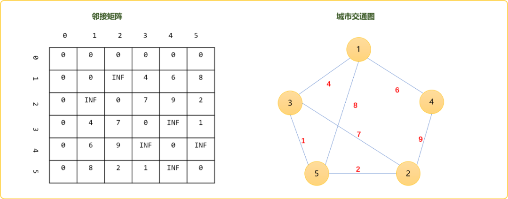
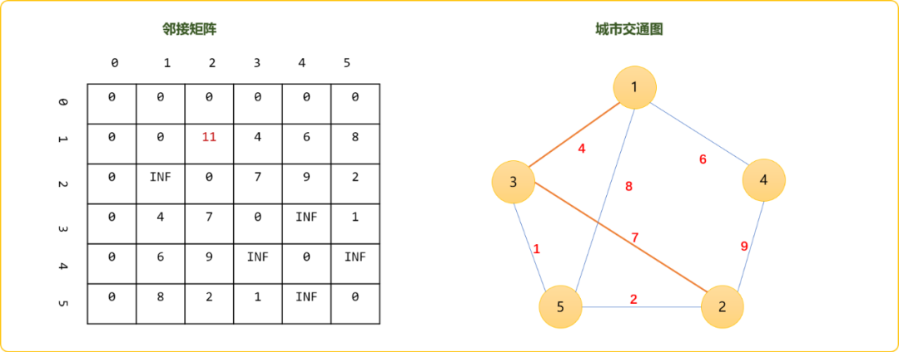
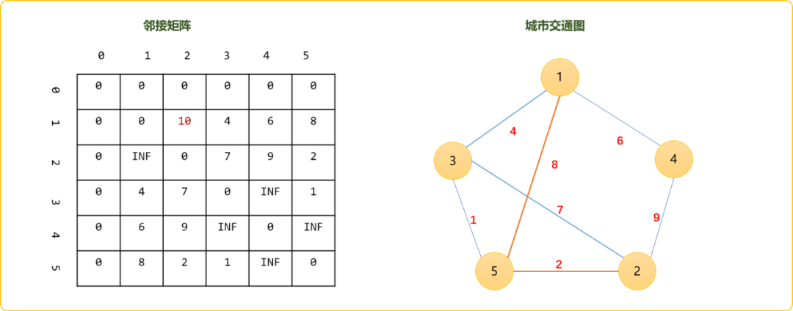
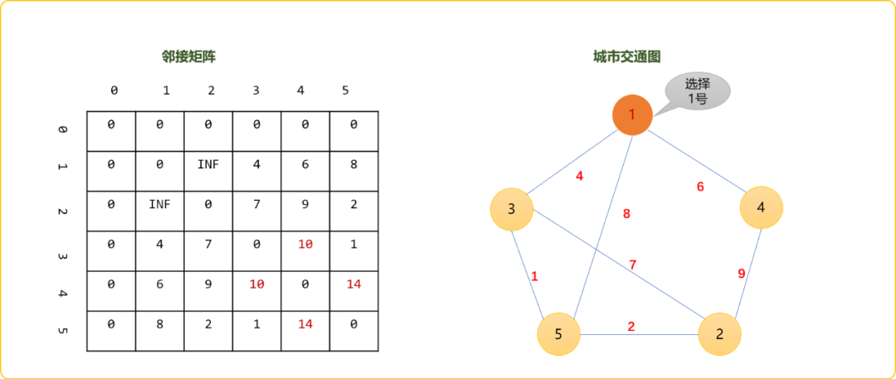
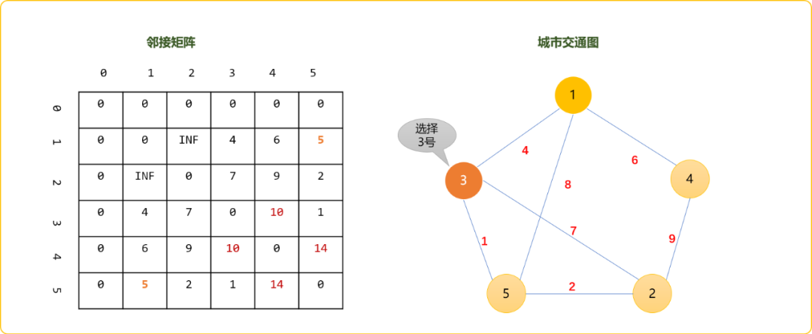
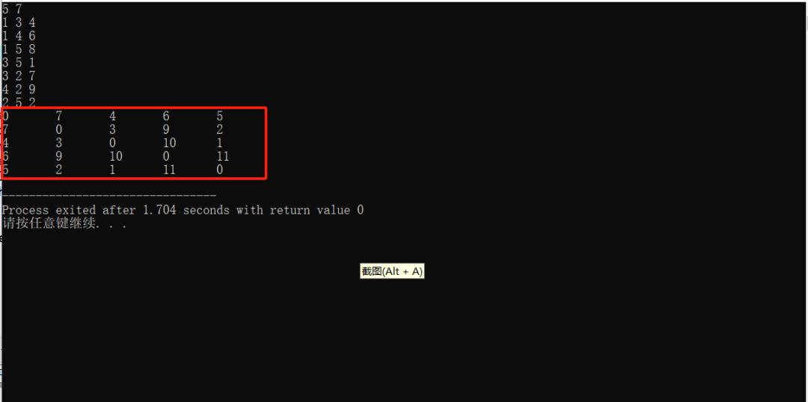
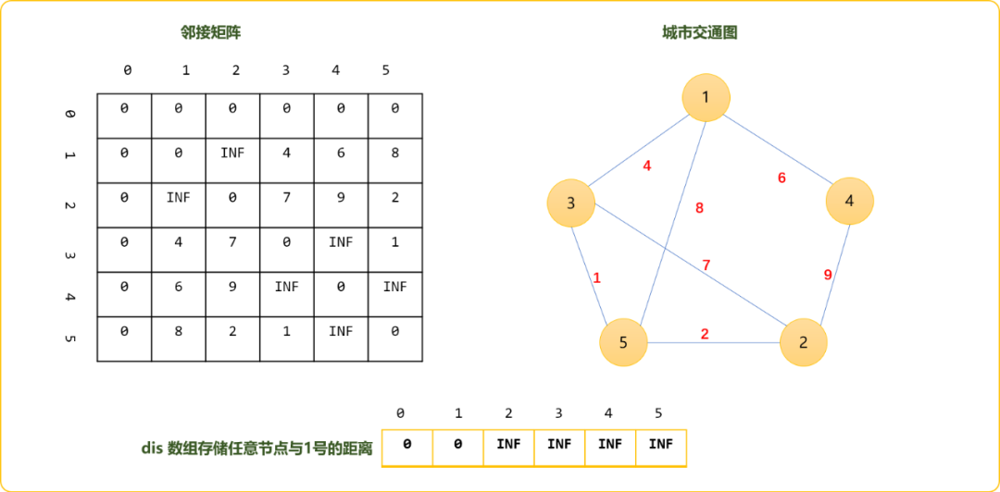
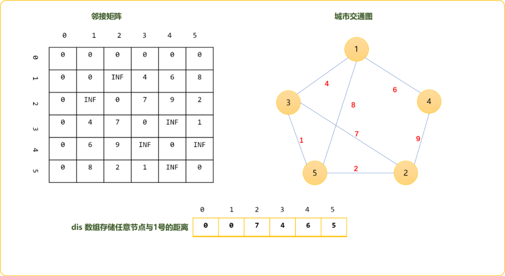

C++图论之常规最短路径算法的花式玩法（Floyd、Bellman、SPFA、Dijkstra算法合集）
1. 前言
权重图中的最短路径有两种，多源最短路径和单源最短路径。多源指任意点之间的最短路径。单源最短路径为求解从某一点出到到任意点之间的最短路径。多源、单源本质是相通的，可统称为图论的最短路径算法，最短路径算法较多：
Floyd-Warshall算法。也称为插点法，是一种利用动态规划思想寻找权重图中多源点之间[最短路径的算法，与Dijkstra算法类似。该算法名称以创始人之一、1978年图灵奖获得者、斯坦福大学计算机科学系教授[罗伯特·弗洛伊德命名。Bellman_ford算法。贝尔曼-福特算法取自于创始人理查德.贝尔曼和莱斯特.福特，暴力穷举法，算法效率较低。但是，能解决的问题范围较大，如负权问题。SPFA算法。Bellman-Ford的队列优化版，本质一样。Dijkstra算法。迪杰斯特拉算法(Diikstra)是由荷兰计算机科学家狄克斯特拉于1959 年提出的，因此又叫狄克斯特拉算法。经典算法，本质是贪心算法。
下面逐一介绍这三种算法。
2. Floyd-Warshall
权重图中，任意两点之间的路径可能存在多条，但是最短的是哪条？
如果你现在想从城市1去城市2，固然是想找一条最短路径的，找出量短路径，意味着省时、省钱、省精力……
本质上就是做选择题。面对这样的情况，你首先要做的便是绘制地图，描绘出与城市1和城市2直接、间接相邻的城市。并初始化城市与城市之间的已知权重。如下图所示。

先得到两点直接相连时的路径。如上图的1和2两点之间，不存在直接相连的边，初始可认为是很大、很大……
使用矩阵描述为 graph[1][2]=INF。INF是一个自定义的常量，存储一个较大的值。
现实生活中，当直接不能到达，或直接到达的成本很高时，会考虑经过一个中转站。这样可能会降低成本。到底经过那个中转站能降低成本。这个只能逐一试试。可以把除了1和2之外的所有节点做为中转站，然后比较是否比之前的路径更短。比如，在1和2之间插入3号节点。
这样你的旅行路就分割成了两段，一段是从1到3、一段是从3到2。如下图，标注红色的为新路线。1->3的权重为4、3->2的权重为7。累加权重为11。显然，比之前的INF要短的，想必你是不会犹豫地选择这条新路线。
这时在你的脑海中，应该使用如下的式子获取到1->2的新的权重。
//因为走 1->3后、再走`3->2`的路线要比之前路径短
// 必然要选择新的路线
if(graph[1][3]+graph[3][2]<graph[1][2])
graph[1][2]=graph[1][3]+graph[3][2];

原理很简单，这时你应该会思考，可能经过2个或多个或其它中转站比经过1个中转站更省成本。是的，现在还不是最终的选择。
每一次更新后，你需要继续试着添加其它节点做为中转站。检查是否更短，如果更短，继续更新，如果更远，就不用更新。如可以试着把4号点做为中转站。这时路线权重变成 graph[1][4]+graph[4][2]=15，并没有比之前经3为中转站中的值更小，以4为中转站这个方案要淘汰掉。
选择5做为中转站，你会发现graph[1][5]+graph[5][2]=11。既然发现了更短的路径，更新邻接矩阵中graph[1][2]的值。这时你应该有所感悟，下图中的邻接矩阵不就是一张动态规划表吗？
Tips：在不断的插入节点，得到新路线后，节点之间的权重值会发生变化。如果需要保留原始图中的节点之间的信息，可以再创建独立的动态规划表。

在1和2之间把其它节点都插入了，然后得到了现阶段的最短权得和10。是不是就是最终的结果呢？
如果你善于观察，从1->3、然后3->5、再5->2，其权重和为7。这条路径才是1->2之间的最短路径。也就是说，经过多个中转站也许比只经过一个中转站会让路径更短。
现在的问题是，我们直接朝目标而来，其实没有考虑，你所经过的中间路径也有可能有更短的。如现阶段，我们认为的1->5然后5->2是最短的，但是，是否忽视了1->5也许也存在最短路径。只有最短加最短才能得到真正的最短。
其实，这也符合动态规划思想，必须存在最优子结构吗！最终问题必然是前面的的子问题一步一步推导出来的。所以，Floyd算法告诉我们，必须更新任意两点之间的路径，才能得到你希望的两点之间的最短路径。
也就是说，当分别插入1、2、3、4、5号节点时，对其它任意两点的距离影响都要记录在案。比如，在插入1号节点时，对其它任意两点的影响如下图所示。对3-4和4-5之间的影响是较大。

选择3号点做作插入点，检查其它任意两点之间经过3号点是否能让路线变得更短。发现，1-5之间的距离被缩短了。

当选择5号点做为插入点，计算1-2点间的距离时，此时会发现1->3->5->2才是最终的最短距离。
理解Floyd算法的关键，动态规划本质是穷举算法，只有当所有可能都计算一次，才能得到最终结果。
编码实现：
#include <iostream>
using namespace std;
//图
int graph[100][100];
//节点数、边数
int n,m;
//无穷大
const int INF=999;
//初始化图，自己和自己的距离为0，和其它节点距离为 INF
void init() {
for(int i=1; i<=n; i++) {
for(int j=1; j<=n; j++) {
if(i==j)graph[i][j]=0;
else graph[i][j]=INF;
}
}
}
//交互式得到节点之间关系
void read() {
int f,t,w;
for(int i=1; i<=m; i++) {
cin>>f>>t>>w;
graph[f][t]=w;
//无向图
graph[t][f]=w;
}
}
//Floyd算法
void floyd() {
//核心代码
for(int dot=1; dot<=n; dot++) {
//以每一个点为插入点，然后更新图中任意两点以此点为中转时的路线权重
for(int i=1; i<=n; i++) {
for(int j=1; j<=n; j++) {
//经过中转后的权重是否小于原来权重
if( graph[i][dot]+graph[dot][j]<graph[i][j] )
//更新
graph[i][j]=graph[i][dot]+graph[dot][j];
}
}
}
}
//输入矩阵中信息
void show() {
for(int i=1; i<=n; i++) {
for(int j=1; j<=n; j++)
cout<<graph[i][j]<<"\t";
cout<<endl;
}
}
int main(int argc, char** argv) {
cin>>n>>m;
init();
read();
floyd();
show();
return 0;
}
测试样例：
Floyd优点和缺点：
缺点和优点都体现的很明显，缺点是时间复杂度高，不适合节点数多的图，优点是易理解，易实现。当题目的数据范围不是很大，此算法可做为首选。
Floyd的应用
传递闭包问题
什么是传递闭包？
对于一个节点 i，如果 j 能到 i，i 能到 k，那么 j 就能到 k。传递闭包，就是把图中所有满足这样传递性的节点计算出来，计算完成后，就知道任意两个节点之间是否相连。
简而言之，传递闭包是一种关于连通性的算法，其是指所有点的所能到达的点集。可以使用并查集思想解决。也可以使用Floyd算法实现，使用Flord算法后，可以检查两点之间是否有有效值，便能得到两点间是否连通。
如基于上述的测试用例走一遍算法后，得到如下图所示的矩阵信息。任意两点间都有权重值，可以推导图上任意两点都可以连通。且整个图只有一个连通分量。

如果仅是用来查找连通性，权重值的多少就没有意义。节点之间有权重的可以用 1表示连通，节点之间没有权重的用0表示不连通。先走一遍Floyd算法。然后就是输入任意两点，检查graph[u][v]是否值为1。
for(int k = 1 ; k <= N ;k++)
for(int i = 1 ;i <= N; i++)
{
for(int j = 1 ; j <= N;j++)
{
if(graph[i][j]==1 || graph[i][k]==1 && graph[k][j]==1)
//直接连通或者间接经过其他点连通
{
graph[i][j] = 1; //两点有连通性
}
}
}
}
求无向图最小环
#include <iostream>
#include <cstring>
#include <algorithm>
using namespace std;
const int N = 110, INF = 0x3f3f3f3f;
int n, m;
int d[N][N], g[N][N]; // d[i][j] 是不经过点
int pos[N][N]; // pos存的是中间点k
int path[N], cnt; // path 当前最小环的方案, cnt环里面的点的数量
// 递归处理环上节点
void get_path(int i, int j) {
if (pos[i][j] == 0) return; // i到j的最短路没有经过其他节点
int k = pos[i][j]; // 否则,i ~ k ~ j的话,递归处理 i ~ k的部分和k ~ j的部分
get_path(i, k);
path[cnt ++] = k; // k点放进去
get_path(k, j);
}
int main() {
cin >> n >> m;
memset(g, 0x3f, sizeof g);
for (int i = 1; i <= n; i ++) g[i][i] = 0;
while (m --) {
int a, b, c;
cin >> a >> b >> c;
g[a][b] = g[b][a] = min(g[a][b], c);
}
int res = INF;
memcpy(d, g, sizeof g);
// dp思路, 假设k是环上的最大点, i ~ k ~ j(Floyd的思想)
for (int k = 1; k <= n; k ++) {
// 求最小环,
//至少包含三个点的环所经过的点的最大编号是k
for (int i = 1; i < k; i ++) // 至少包含三个点，i，j，k不重合
for (int j = i + 1; j < k; j ++)
// 由于是无向图,
// ij调换其实是跟翻转图一样的道理
// 直接剪枝, j从i + 1开始就好了
// 更新最小环, 记录一下路径
if ((long long)d[i][j] + g[j][k] + g[k][i] < res) {
// 注意,每当迭代到这的时候,
// d[i][j]存的是上一轮迭代Floyd得出的结果
// d[i][j] : i ~ j 中间经过不超过k - 1的最短距离(k是不在路径上的)
res = d[i][j] + g[j][k] + g[k][i];
cnt = 0;
path[cnt ++] = k; // 先把k放进去
path[cnt ++] = i; // 从k走到i(k固定的)
get_path(i ,j); // 递归求i到j的路径
path[cnt ++] = j; // j到k, k固定
}
// Floyd, 更新一下所有ij经过k的最短路径
for (int i = 1; i <= n; i ++)
for (int j = 1; j <= n; j ++)
if (d[i][j] > d[i][k] + d[k][j]) {
d[i][j] = d[i][k] + d[k][j];
pos[i][j] = k;
}
}
if (res == INF) puts("No solution.");
else {
for (int i = 0; i < cnt; i ++) cout << path[i] << ' ';
cout << endl;
}
return 0;
}
3.Bellman_Ford
Bellman_Ford算法是典型的“笨人有笨法”。虽然笨，但也有其光亮一面，如可以检查负权图。其算法的思路并不难理解。
BF算法是单源最短路径算法，初始可以任先确定一个节点，然后找与此节点直接相连的节点，更新节点，然后再以更新后的节点继续向外延展。
继续使用上文中的图结构，了解延展的过程。
先定下1号节点，然后选择任意边，试着更新与1号节点的距离，边的选择按节点编号。
为了研究的方便，再创建一个一维数组，存储任意节点至1号的权重。初始时除了1和自己距离为0，其它节点与1号节点距离为无穷大（设置一个合理大的值即可）。当然，你也可以直接在邻接矩阵中更新数据，但没有添加一个一维数组来的方便和易懂。

读出图中的所有边上的权重，更新节点到1号节点距离，这个过程称为松弛。更新通用表达式=边上的权重+节点到1号节点的值是否小于当前存储的值。
比如更新1-3这条边，更新表达式：
本文研究的是无向图，除了松驰1->3还需要松驰3->1。
因 1<->4、1<->5 符合 dis[i]>graph[i][j]+dis[j]，距离得到更新。松驰和1邻接的顶点的边，可以理解为邻接顶点直接到1的距离是可知的。
如松驰2<->3，2<->4,2<->5 ，可以理解为2无法直接连通到1，但是可以通过3、4、5这两个节点到达1，当然取三者中的最小值。dis[2]=10。因为是无向图，也可以理解3、4、5是否可以通过2到达1，且是否距离更短。自然想到，无论floyd和bellman的基本思想都是，如果无法直接到达，试着通过其它点是否可以到达，甚至更近。
如下是更新2-3、2-4、2-5后的结果。
Tips： 始点用
i表示，终点用j表示。
如下是更新3-5后的结果，因5可以通过3更接近1，值更新为5。
一轮松驰后，需要再重新对每一条边进行松驰。直到任何边的松驰不能引起更新为止。
重新松驰1-3，1-4，1-5不会引起更新，松驰2-5时，显然，2经过5到达1更近。

至些，对边的松驰无法再引起距离的更新，算法结束。其结果和上文使用Floyd算法结论是一样。两者算法的底层逻辑差不多，如在松驰2-5边时，基思想是是否通过5到达1节点会更近。
那么需要进行多少轮呢?
在一个含有n个顶点的图中，任意两点之间的最短路径最多包含n-1边。而实际是，有时也不需要更新n轮。如上述过程，也就三轮而已。
在每轮更新之前，提前备份dis数组，此轮更新后，如果dis数组中值没有变化，则可以提前结束。
编码实现：
#include <bits/stdc++.h>
using namespace std;
//图
int graph[100][100];
int dis[100];
int bakDis[100];
//节点数、边数
int n,m;
//无穷大
const int INF=999;
//初始化图，自己和自己的距离为0，和其它节点距离为 INF
void init() {
for(int i=1; i<=n; i++) {
for(int j=1; j<=n; j++) {
if(i==j)graph[i][j]=0;
else graph[i][j]=INF;
}
dis[i]=INF;
}
}
//交互式得到节点之间关系
void read() {
int f,t,w;
for(int i=1; i<=m; i++) {
cin>>f>>t>>w;
graph[f][t]=w;
//无向图
graph[t][f]=w;
}
}
//Bellman算法
void bellman() {
dis[1]=0;
//核心代码较简单
for(int c=1; c<=n-1; c++) { //轮次
//备份dis
for(int i=1; i<=n; i++)bakDis[i]=dis[i];
for(int i=1; i<=n; i++) {
for(int j=1; j<=n; j++) {
if(graph[i][j]!=INF) {
if(dis[i]>graph[i][j]+dis[j] )dis[i]=graph[i][j]+dis[j] ;
if(dis[j]>graph[i][j]+dis[i] )dis[j]=graph[i][j]+dis[i] ;
}
}
}
//检查是否有更新
bool con=false;
for(int i=1; i<=n; i++)
if(bakDis[i]!=dis[i])con=true;
if(!con)break;
}
}
//输出信息
void show() {
for(int i=1; i<=n; i++) {
cout<<dis[i]<<"\t";
}
}
int main(int argc, char** argv) {
cin>>n>>m;
init();
read();
bellman();
show();
return 0;
}
负权问题
如果一个图如果没有负权回路，那么最短路径所包含的边最多为n-1条，即进行n-1轮松弛之后最短路不会再发生变化。如果在n-1轮松弛之后最短路仍然会发生变化，则该图必然存在负权回路。
4. SPFA
SPFA(Shortest Path Faster Algorithm) 算法是 Bellman-Ford算法的队列优化算法的别称，通常用于求含负权边的单源最短路径，以及判负权环。SPFA 最坏情况下时间复杂度和朴素 Bellman-Ford相同，为 O(VE)。
算法基本思想
初始时将源点加入队列。每次从队首(head)取出一个顶点，并对与其相邻的所有顶点进行松弛尝试，若某个相邻的顶点松弛成功，且这个相邻的顶点不在队列中(不在head和tail之间)，则将它加入到队列中。对当前顶点处理完毕后立即出队，并对下一个新队首进行如上操作，直到队列为空时算法结束。
除此之外，算法逻辑和原生Bellman是一样，就不在此复述。直接上代码，下面代码使用邻接表方式存储图结构。
编码实现
#include <bits/stdc++.h>
using namespace std;
/*
* 顶点类型
*/
struct Ver {
//顶点编号
int vid=0;
//第一个邻接点
int head=0;
//起点到此顶点的距离（顶点权重）,初始为 0 或者无穷大
int dis=0;
//是否入队
bool isVis=false;
void desc() {
cout<<vid<<" "<<dis<<endl;
}
};
/*
* 边
*/
struct Edge {
//邻接点
int to;
//下一个
int next=0;
//权重
int weight;
};
class Graph {
private:
const int INF=999;
//存储所有顶点
Ver vers[100];
//存储所有边
Edge edges[100];
//顶点数，边数
int v,e;
//队列
queue<int> que;
public:
Graph( int v,int e ) {
this->v=v;
this->e=e;
init();
}
void init() {
for(int i=1; i<=v; i++) {
//重置顶点信息
vers[i].vid=i;
vers[i].dis=INF;
vers[i].head=0;
vers[i].isVis=false;
}
//下面有向图
int f,t,w;
for(int i=1; i<=e; i++) {
cin>>f>>t>>w;
//设置边的信息
edges[i].to=t;
edges[i].weight=w;
//头部插入
edges[i].next=vers[f].head;
vers[f].head=i;
}
}
void spfa(int start) {
//初始化队列,起点到起点的距离为 0
vers[start].dis=0;
vers[start].isVis=true;
que.push(start);
while( !que.empty() ) {
//出队列
Ver ver=vers[ que.front() ];
ver.desc();
que.pop();
//找到邻接顶点, i 是边集合索引号
for( int i=ver.head; i!=0; i=edges[i].next) {
int v=edges[i].to;
//更新距离
if( vers[ v ].dis > ver.dis + edges[i].weight ) {
vers[ v ].dis = ver.dis+edges[i].weight;
//入队列
if( vers[ v ].isVis==false ) {
vers[ v ].isVis=true;
que.push( v );
}
}
}
}
}
void show() {
for(int i=1; i<=v; i++) {
cout<<vers[ i ].dis<<"\t";
}
}
};
int main() {
int v,e;
cin>>v>>e;
Graph graph(v,e);
graph.spfa(1);
graph.show();
return 0;
}
////测试用例
5 7
1 2 2
1 5 10
2 3 3
2 5 7
3 4 4
4 5 5
5 3 6
////输出
//0 2 5 9 9
5. Dijkstra
Dijkstra迪杰斯特拉算法(Diikstra) 是由荷兰计算机科学家狄克斯特拉于1959 年提出的，因此又叫狄克斯特拉算法。
核心思想
搜索到某一个顶点后，更新与其相邻顶点的权重。权重计算法则以及权重更新原则和Bellman相同。和Bellman区别是，DJ 算法搜索时，每次选择的下一个顶点是所有权重值最小的顶点。其思想是保证每一次选择的顶点和当前顶点权重都是最短的。所以，DJ是基于贪心思想。
编码实现
- 矩阵存储
#include <bits/stdc++.h>
using namespace std;
//矩阵，存储图
int graph[100][100];
//顶点、边数
int v,e;
//优先队列，使用数组
int pri[100];
//存储起点到其它顶点之间的最短距离
int dis[100];
//设置无穷大常量
int const INF =INT_MAX;
/*
*初始化函数
*/
void init()
{
//初始化图中顶点之间的关系
for(int i=1; i<=v; i++)
{
for(int j=1; j<=v; j++)
{
if( i==j )
{
//自己和自己的关系（权重）为 0
graph[i][j]=0;
}
else
{
//任意两点间的距离为无穷大
graph[i][j]=INF;
}
}
}
//交互式确定图中顶点之间的关系
int f,t,w;
for( int i=1; i<=e; i++ )
{
cin>>f>>t>>w;
graph[f][t]=w;
}
//初始设编号为 1 的顶点为起始点,根据顶点的关系初始化起点到其它顶点之间的距离
for(int i=1; i<=v; i++)
{
dis[i]=graph[1][i];
}
//初始化优先队列（也称为候选队列）
for(int i=1; i<=v; i++ )
{
if(i==1)
{
//起始顶点默认为已经候选
pri[i]=1;
continue;
}
//其它顶点都可候选
pri[i]=0;
}
}
/*
*
*Dijkstra算法
*/
void dijkstra()
{
for(int i=1; i<=v; i++)
{
//从候选队列中选择一个顶点，要求到起始顶点的距离为最近的
int u=-1;
int mi=INF;
for( int j=1; j<=v; j++ )
{
if(pri[j]==0 && dis[j]<mi)
{
mi=dis[j];
u=j;
}
}
if(u!=-1)
//找到后设置为已经候选
pri[u]=1;
else
//找不到就结束
break;
//查找与此候选顶点相邻的顶点，且更新邻接点与起点之间的距离
//相当于在此顶点基础上向后延长
for( int j=1; j<=v; j++ )
{
if( graph[u][j]!=INF )
{
//找到相邻顶点
if(dis[j]>dis[u]+graph[u][j] )
{
//更新
dis[j]=dis[u]+graph[u][j];
}
}
}
}
}
/*
*
*显示最后的结果
*/
void show()
{
for(int i=1; i<=v; i++)
{
cout<<dis[i]<<"\t";
}
}
int main()
{
cin>>v>>e;
init();
dijkstra();
show();
return 0;
}
//测试用例
6 9
1 2 1
1 3 12
2 3 9
2 4 3
3 5 5
4 3 4
4 5 13
4 6 15
5 6 4
//输出
0 1 8 4 13 17
- 邻接表
#include <bits/stdc++.h>
using namespace std;
/*
* 顶点类型
*/
struct Ver
{
//顶点编号
int vid=0;
//第一个邻接点
int head=0;
//起点到此顶点的距离（顶点权重）,初始为 0 或者无穷大
int dis=0;
//重载函数
bool operator<( const Ver & ver ) const
{
return this->dis<ver.dis;
}
void desc(){
cout<<vid<<" "<<dis<<endl;
}
};
/*
* 边
*/
struct Edge
{
//邻接点
int to;
//下一个
int next=0;
//权重
int weight;
};
class Graph
{
private:
const int INF=INT_MAX;
//存储所有顶点
Ver vers[100];
//存储所有边
Edge edges[100];
//顶点数，边数
int v,e;
//起点到其它顶点之间的最短距离
int dis[100];
//优先队列
priority_queue<Ver> proQue;
public:
Graph( int v,int e )
{
this->v=v;
this->e=e;
init();
}
void init()
{
for(int i=1;i<=v;i++){
//重置顶点信息
vers[i].vid=i;
vers[i].dis=INF;
vers[i].head=0;
}
int f,t,w;
for(int i=1; i<=e; i++)
{
cin>>f>>t>>w;
//设置边的信息
edges[i].to=t;
edges[i].weight=w;
//头部插入
edges[i].next=vers[f].head;
vers[f].head=i;
}
for(int i=1; i<=v; i++)
{
dis[i]=vers[i].dis;
}
}
void dijkstra(int start)
{
//初始化优先队列,起点到起点的距离为 0
vers[start].dis=0;
dis[start]=0;
proQue.push(vers[start]);
while( !proQue.empty() )
{
//出队列
Ver ver=proQue.top();
ver.desc();
proQue.pop();
//找到邻接顶点 i 是边集合索引号
for( int i=ver.head; i!=0; i=edges[i].next)
{
int v=edges[i].to;
//更新距离
if( vers[ v ].dis > ver.dis + edges[i].weight )
{
vers[ v ].dis = ver.dis+edges[i].weight;
dis[ v ]= vers[ v ].dis;
//入队列
proQue.push( vers[v] );
}
}
}
}
void show()
{
for(int i=1; i<=v; i++)
{
cout<<dis[i]<<"\t";
}
}
};
int main()
{
int v,e;
cin>>v>>e;
Graph graph(v,e);
int s;
cin>>s;
graph.dijkstra(s);
graph.show();
return 0;
}
6. 总结
除了本文所述算法，最短路径还有很多其它算法，每一种算法各有特色。可根据实际情况酌情选择。